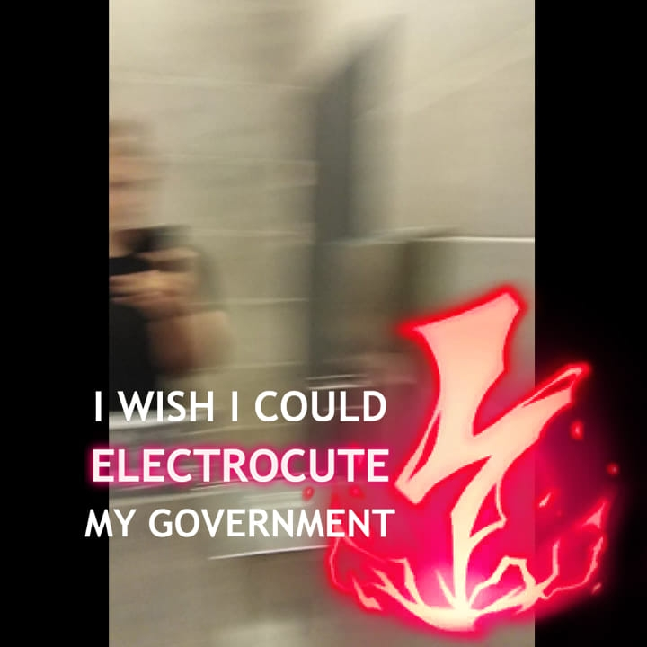
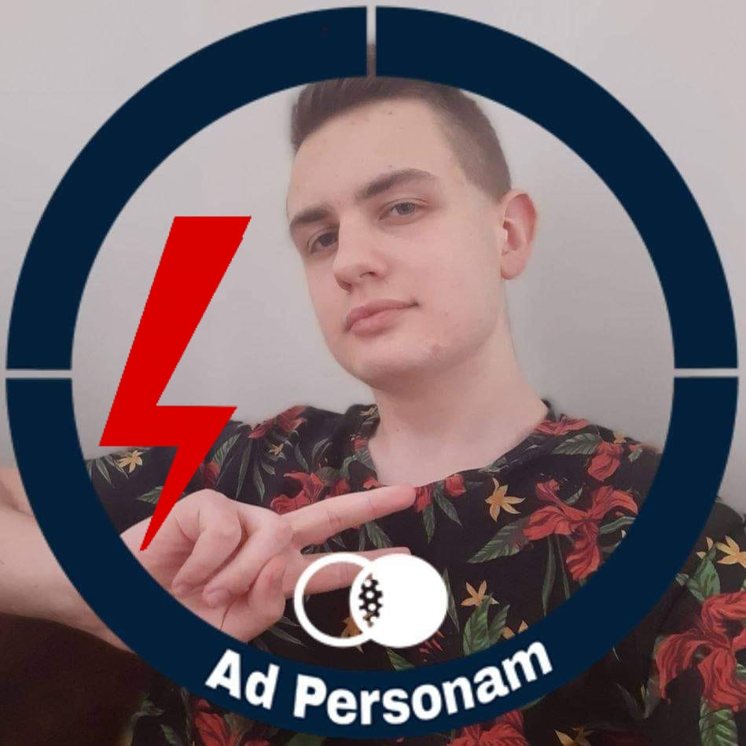
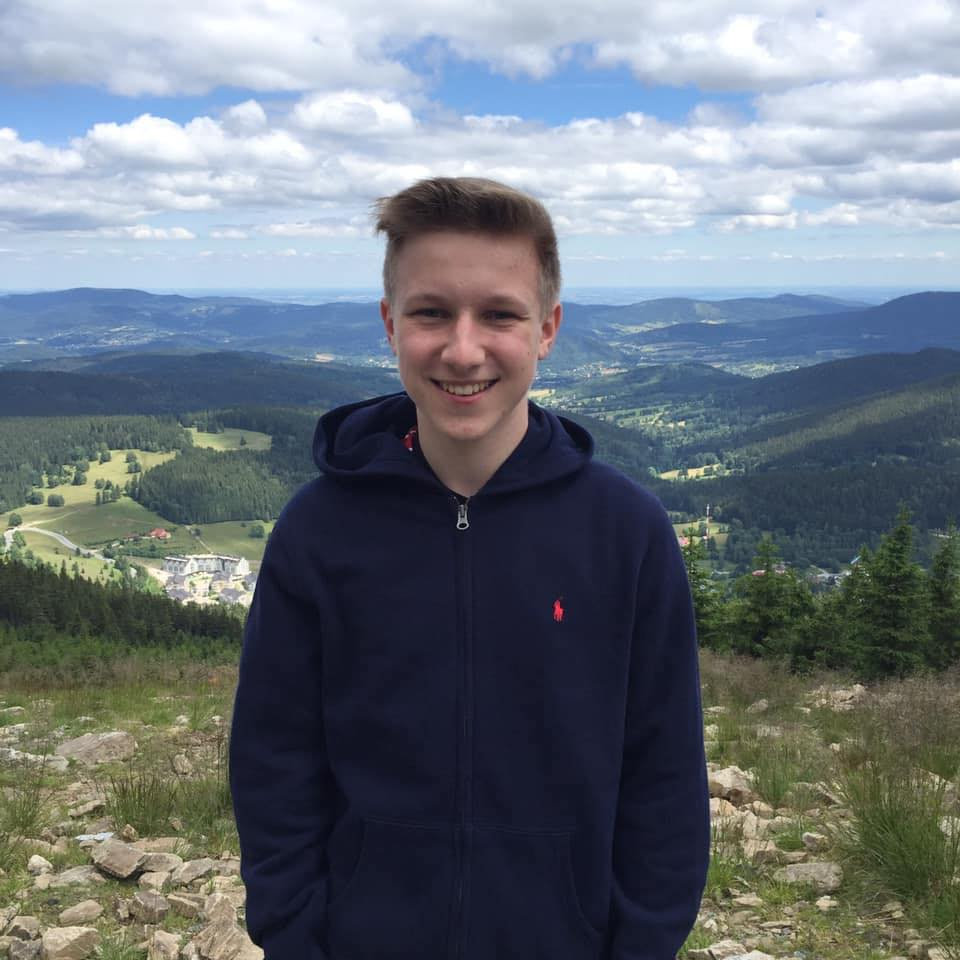
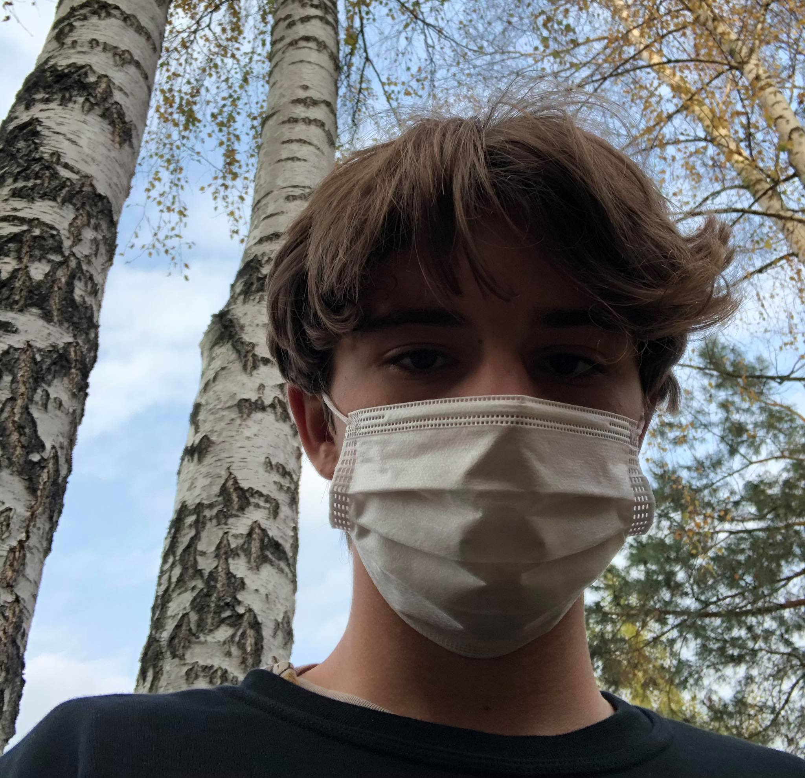

|  |
MATEUSZ SŁOTWIŃSKI
Siemka, nazywam się Mateusz i to ja jestem autorem całego projektu. Chodzę do drugiej klasy IV Liceum w Rzeszowie o profilu mat-fiz-inf.
Moje spektrum zainteresowań jest naprawdę szerokie. Szczególnie dużo zajmuję się naukami polityczno-ekonomicznymi. Lubię też historię, a już szczególnie tą XXw., ogarniam bardzo dobrze geografię, kocham nauki matematyczno-techniczne (szczególnie mechanika kwantowa i relatywistyka).
Poglądy mam raczej stałe, od 3 lat jestem czymś w rodzaju paleoliberarianina.
Siedzę na ogromnej liczbie grup i lubię wysyłać randomowe zdjęcia i memy różnym ludziom. Uwielbiam słuchać starej muzyki czy to Pezet, Paktofonika i Grammatik czy to Linkin Park i Skillet.
Miłego dnia wszystkim czytającym!

|
 |
KUBA WÓJCICKI
Kuba Wojcicki lub woojcik. Mam 17 lat i uczęszczam do IV LO w Rzeszowie na profil Biol-chem. Posiadam wiele zainteresowań, jednak głównymi na ten moment są jazda na mtb, oraz szeroko pojęta astronomia. Kolejną rzeczą są filmy i kino. Czasem też lubię wybrać się na burgera lub po prostu dobre jedzenie. Jeśli chodzi o poglądy polityczne jestem libertarianinem.
|
|  |
DARIUSZ DZIK
Dariusz, 17 lat, pomagam w tym projekcie. Chodzę do drugiej klasy technikum po Gimnazjum w Zespole Szkół "Elektryk" im. Noblistów Polskich w Słupsku o profilu automatyki. Posiadam naprawdę bardzo dużo zainteresowań. Jestem matematykiem i fizykiem. Uwielbiam wszystkie mechanizmy i prawa wszechświata.
Polityka to także moje zainteresowanie, dopiero w tym roku ( 2020 ) odnalazłem swoje miejsce w polityce i zobaczyłem jakie mam poglądy, otóż jestem Zielonym Libertarianinem/Minarchistą. Partie do której mi najbliżej to Partia Możemy i Libertarianie.
Mój ulubiony typ muzyki to elektro, a i również uwielbiam ostre jedzenie.
Pozdrawiam <33
|
|
BARTEK KLIMCZUK
Nazywam się Bartek Klimczuk. Interesuję się polityką, historią i sportem. W historii szczególnie interesuje mnie powojenna Europa i historia Stanów Zjednoczonych Ameryki. Jeśli chodzi o sport to interesuję się przede wszystkim koszykówką, skokami narciarskimi i Formułą 1. Jeśli chodzi o poglądy polityczne to określam się jako libertarianin, leseferysta i radykalny kapitalista. Poglądowo najbliżej mi do partii Libertarianie
|
|
JAGODA MACIEJEWSKA
Hej! Mam na imię Jagoda i mam 16 lat. Możecie mnie zaszufladkować jako pseudoalternatywkę. Interesuję się historią sztuki. W wolnych chwilach rysuję, zajmuję się tworzeniem projektów graficznych, montażem filmów, a także wyrobem biżuterii. Lubię też zaśmiecać ludziom stronę główną facebooka swoim shitpostem. Kocham uczyć się nowych rzeczy. Od niedawna zainteresowałam się też polityką. Moje poglądy są mocno lewicowe, ale nie określam jeszcze najbliższej mi partii, bo wiem, że moje stanowisko może się w jakimś stopniu zmienić. Nie mam ulubionego gatunku muzyki, ostatnio kręcę się w okolicach lat 60-70tych.
|
|  |
MARCEL MICHAJŁOW
azywam się Marcel Michajłow. Mam 16 lat i jestem uczniem 2 klasy Liceum Ogólnokształcącego im K. K. Baczyńskiego w Nowej Soli o profilu mat-fiz.
Interesuję się polityką, historią i sportem. W historii najbardziej interesuję mnie historia XX wieku, głównie I i II wojna światowa. W sporcie najbardziej lubię piłkę nożną i F1. Jestem kibicem Realu Madryt i reprezentacji Polski.
Moje poglądy polityczne można określić jako konserwatywne światopoglądowo i skrajnie liberalne w kwestii gospodarki. Najbliższa partia moim poglądom to KORWiN.
|
|  |
WIKTOR MALINOWSKI
Cześć, Nazywam się Wiktor. Interesuję się naprawdę wieloma rzeczami,głównie naukami społeczno-humanistycznymi, w tym finansami publicznymi ale również fotografią kolejową. W wolnym czasie słucham muzyki (głównie alternatywnej, czytam książki i edytuje Wikipedię. Po długiej wędrówce wokół różnych poglądów politycznych określam się jako eko-libertarianin.
Miłego dnia!
|